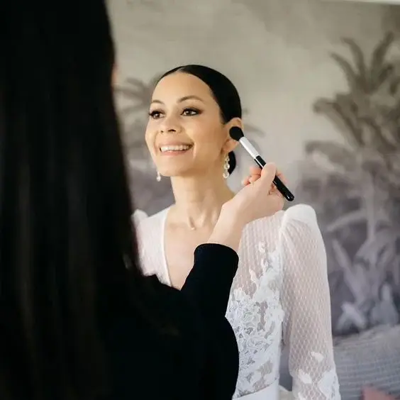
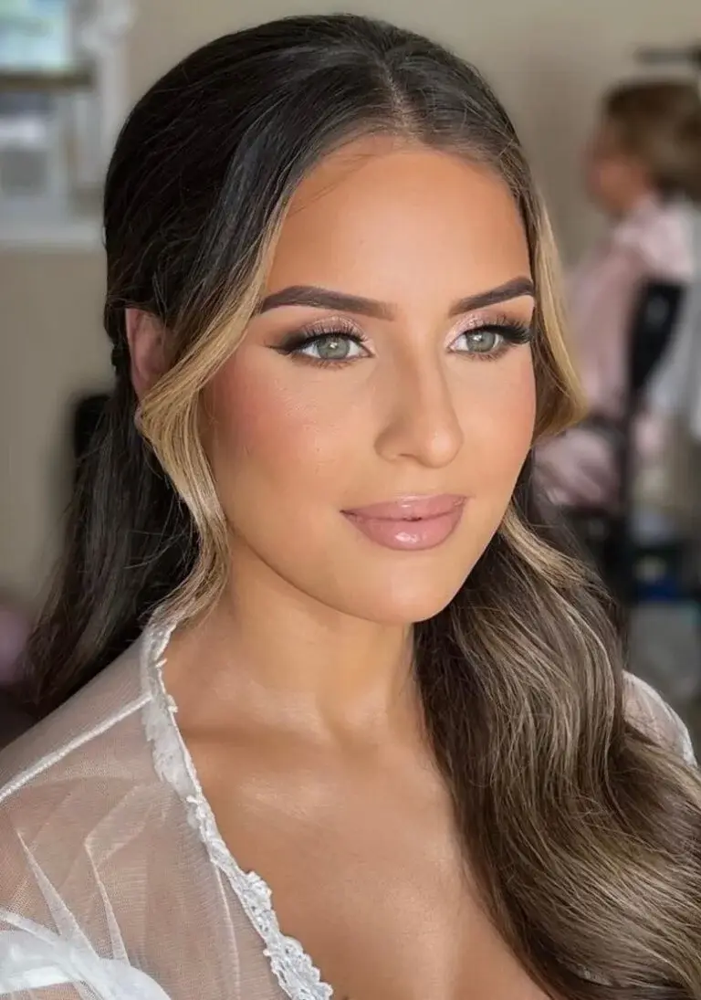
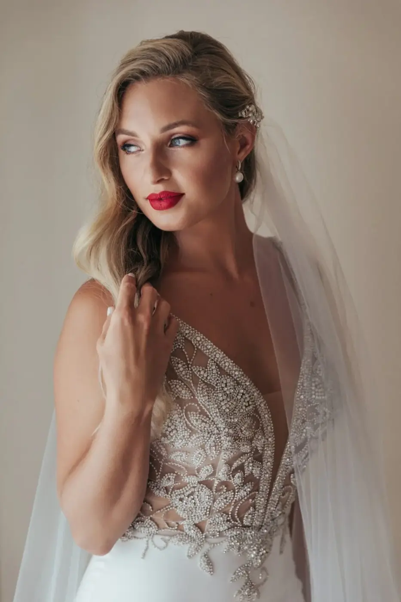
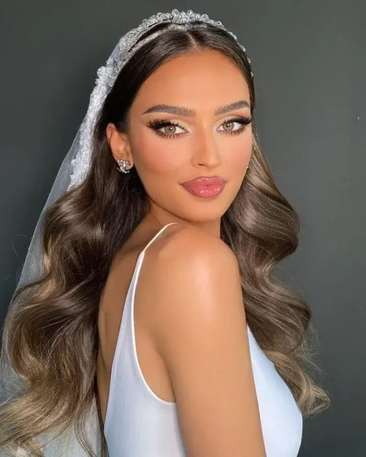
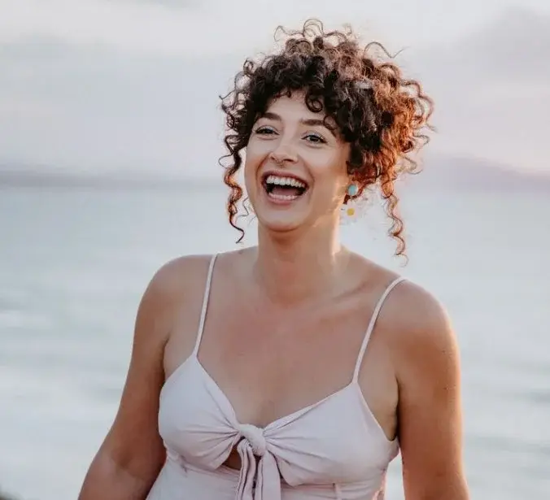
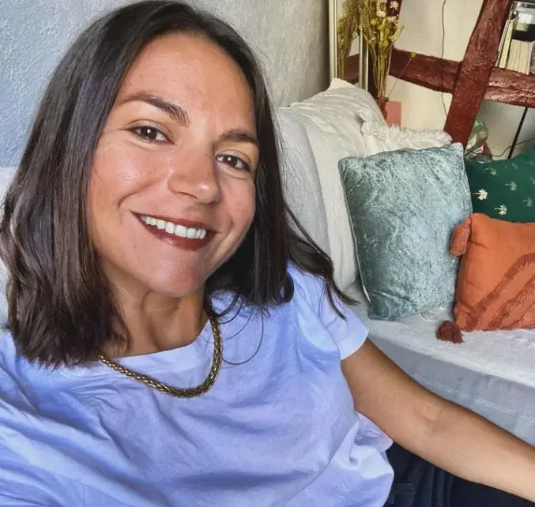
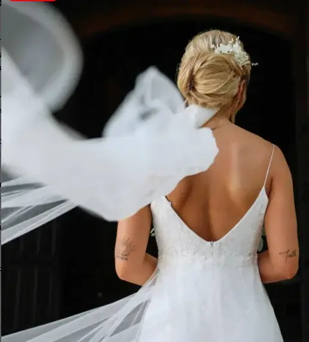
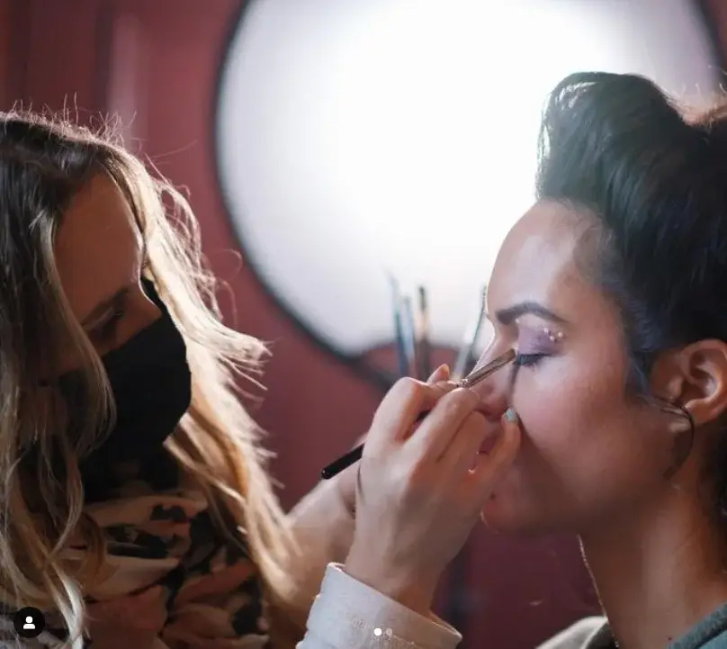
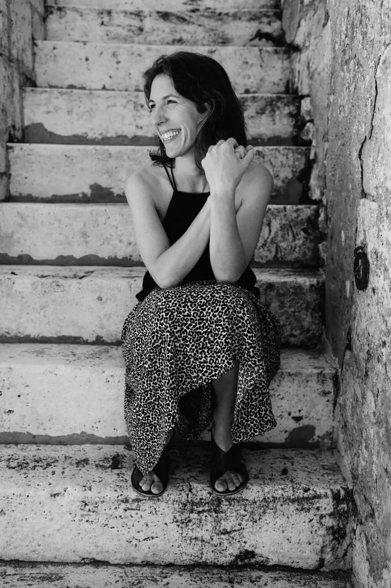
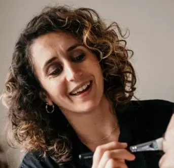

Où trouver une maquilleuses mariage sur Bordeaux ? Le jour du mariage est un moment où chaque détail compte, où chaque regard capté est empreint d’émotion et de promesses. Parmi les préparatifs minutieux, le choix du maquillage revêt une importance particulière. C’est une occasion pour la mariée de briller avec éclat, tout en conservant sa beauté naturelle. Le maquillage de mariage ne se résume pas seulement à l’application de produits cosmétiques, mais c’est un art délicat qui vise à sublimer les traits du visage et à refléter l’éclat intérieur de la mariée. Dans cet article, nous explorons les tendances actuelles mariages, les conseils pratiques et les choix judicieux pour un maquillage de mariage qui capture parfaitement l’esprit de cette journée spéciale, et découvrirons quelques maquilleuses de bordeaux spécialisées pour les grands événements, tout en assurant une apparence radieuse et inoubliable.
Une variété de beauté
Pour un mariage, le maquillage joue un rôle essentiel en mettant en valeur la beauté naturelle de la mariée tout en s’harmonisant avec le thème et le style de l’événement. Voici les principales variétés de maquillage souvent choisies pour les mariages :

Maquillage naturel ou nude
Le maquillage naturel est un choix populaire pour les mariages car il met en avant la beauté naturelle de la mariée tout en restant subtil et frais. Il se caractérise par des tons neutres et des textures légères qui offrent un teint lumineux et une apparence sans effort. Ce style de maquillage convient parfaitement aux mariées recherchant une allure douce et intemporelle, idéale pour les mariages en plein air ou les cérémonies de jour.

Maquillage classique et élégant
Le maquillage classique pour mariage se concentre sur la perfection du teint avec une base impeccable, des nuances douces sur les yeux pour accentuer le regard, et des lèvres délicatement rosées ou nude. Ce style de maquillage est apprécié pour sa sophistication et son adaptation à divers thèmes de mariage, qu'il s'agisse de mariages traditionnels, modernes ou vintage.

Maquillage romantique
Le maquillage romantique se distingue par l'utilisation de tons doux et pastels, souvent avec des touches de rose ou de pêche sur les yeux et les lèvres. Il crée une apparence douce et féminine, parfaite pour les mariages où l'ambiance est romantique et raffinée. Ce style met l'accent sur la douceur et la délicatesse, capturant l'esprit de l'amour et de la célébration.

Maquillage bohème ou rustique
Pour les mariages bohèmes ou rustiques, le maquillage peut incorporer des éléments naturels comme des teintes terreuses, des textures légèrement texturées et des accents de couleurs chaudes. Ce style de maquillage est souvent associé à une peau lumineuse et à des détails artistiques qui complètent un look décontracté et élégant, parfait pour les mariées désirant une apparence bohème et non conventionnelle.

Maquillage moderne et audacieux
Les mariées qui souhaitent faire une déclaration audacieuse peuvent opter pour un maquillage moderne avec des éléments forts tels qu'un eye-liner dramatique, des lèvres rouge vives ou des nuances de couleurs intenses sur les paupières. Ce style convient aux mariages contemporains et urbains, offrant une touche de sophistication et d'individualité.

Maquillage glamour et sophistiqué
Le maquillage glamour est idéal pour les mariages nocturnes ou les événements formels. Il se caractérise par des finitions brillantes, des tons riches et une attention particulière aux détails comme les cils volumineux et les sourcils parfaitement dessinés. Ce style de maquillage est conçu pour briller sous les lumières et captiver l'attention, parfait pour les mariées cherchant à se démarquer avec élégance et sophistication.
Conseils pour le choix du maquillage de mariage
Les essais de maquillage pour un mariage sont une étape cruciale dans les préparatifs de la mariée. C’est lors de ces sessions que la mariée à l’occasion de collaborer avec un professionnel du maquillage pour expérimenter différents styles et techniques. Ces essais permettent non seulement de trouver le maquillage parfait qui complète la robe et le thème du mariage, mais aussi de s’assurer que la mariée se sente à l’aise et confiante le jour J. C’est également le moment idéal pour discuter des préférences personnelles en matière de maquillage, que ce soit un look naturel et lumineux ou un style plus audacieux et sophistiqué. En optant pour des essais de maquillage, la mariée peut s’assurer que chaque détail est parfaitement ajusté pour une apparence qui la fera briller de bonheur le jour de son mariage.
L’assortiment du maquillage à la coiffure est crucial pour créer un look harmonieux et élégant lors de votre mariage. Le maquillage et la coiffure doivent compléter et mettre en valeur l’ensemble de votre visage et de votre style. Par exemple, si vous optez pour une coiffure sophistiquée avec des boucles élégantes ou une tresse romantique, un maquillage doux et naturel peut être idéal pour ne pas surcharger l’ensemble. En revanche, une coiffure plus audacieuse comme un chignon haut ou des vagues glamour peut être sublimée par un maquillage plus prononcé avec des lèvres vives ou des yeux soulignés. L’important est de créer un équilibre visuel entre la coiffure et le maquillage, en tenant compte de votre personnalité, du thème de votre mariage et de votre tenue. Faire des essais de maquillage et de coiffure ensemble vous permettra de trouver le juste équilibre et de vous assurer que chaque détail contribue à votre look de mariée parfaitement harmonieux et éblouissant.
Pour avoir pu organiser des mariages, je vous partage quelques tips pour un maquillage longues tenues durant tout l’événement.

Alexandra Ambert, Wedding Planner
Pendant votre journée de mariage, il est essentiel de garder votre rouge à lèvres à proximité pour des retouches régulières. En choisissant une formule longue tenue qui résiste aux baisers et aux verres levés, vous pouvez assurer une couleur vibrante et fraîche tout au long de la journée. Prévoyez de glisser votre rouge à lèvres préféré dans votre pochette ou confiez-le à l’une de vos demoiselles d’honneur pour des retouches discrètes entre les moments clés. Cela vous permettra non seulement de maintenir un sourire éclatant dans toutes les photos, mais aussi de vous sentir confiante et magnifique tout au long de votre journée spéciale.
Cette approche garantit que vous restez resplendissante et confiante jusqu’à la fin de la cérémonie, avec des lèvres parfaitement colorées et une apparence soignée.Pour obtenir une peau éclatante et impeccable le jour de votre mariage, prendre soin de votre peau dès les mois précédant l’événement est crucial. Commencez par établir une routine de soin adaptée à votre type de peau, incluant nettoyage régulier, exfoliation douce et hydratation quotidienne pour maintenir une peau saine. Hydratez intensément avec des crèmes riches en nutriments essentiels et protégez-vous du soleil avec un écran solaire approprié pour prévenir le vieillissement prématuré et les dommages cutanés. Si nécessaire, consultez un dermatologue pour des traitements ciblés comme les peelings chimiques ou les soins au laser pour corriger les imperfections et uniformiser le teint. Adoptez également une alimentation équilibrée riche en antioxydants et en nutriments, et pratiquez des techniques de gestion du stress pour minimiser son impact sur votre peau. En prenant ces mesures préventives et en planifiant à l’avance, vous pouvez vous assurer que votre peau rayonnera de santé et de beauté naturelle le jour de votre mariage, vous permettant ainsi de vous sentir confiante et éblouissante.
Des maquilleuses mariage de Bordeaux avec qualité garantie

amandine de couture de bordeaux

@vanessagermon de bordeaux

@lescoquettesparty de bordeaux

@sarahmaquille sur dax

@mybiotybayonne64 de bayonne

@anna_kviten de bordeaux

@arcachonpylamakeup de gironde

@gangdenanas de bordeaux

Octopus de bordeaux

Pauline Bord de bordeaux

@lsublime.maquillage de bordeaux

@mel_gvlt de bordeaux
En bref...
En conclusion, le maquillage de mariage représente bien plus qu’une simple application de produits cosmétiques : c’est un art qui célèbre la beauté naturelle de la mariée tout en reflétant son style personnel et l’ambiance de l’événement. Du choix des couleurs et des textures à l’harmonisation avec la coiffure et la robe, chaque détail compte pour créer un look qui soit à la fois intemporel et en phase avec les tendances actuelles. En préparant sa peau en amont et en réalisant des essais de maquillage, la mariée peut s’assurer que son maquillage tiendra toute la journée et la soirée sans compromis sur la fraîcheur et la beauté. Que ce soit pour un maquillage naturel et lumineux ou un look plus audacieux et sophistiqué, l’objectif reste le même : faire en sorte que la mariée se sente confiante, rayonnante et absolument magnifique le jour de son mariage. En collaborant avec des professionnels et en prenant le temps de planifier chaque étape, le maquillage devient une partie intégrante de l’ensemble de la mariée, capturant l’essence de ce jour mémorable avec éclat et élégance.